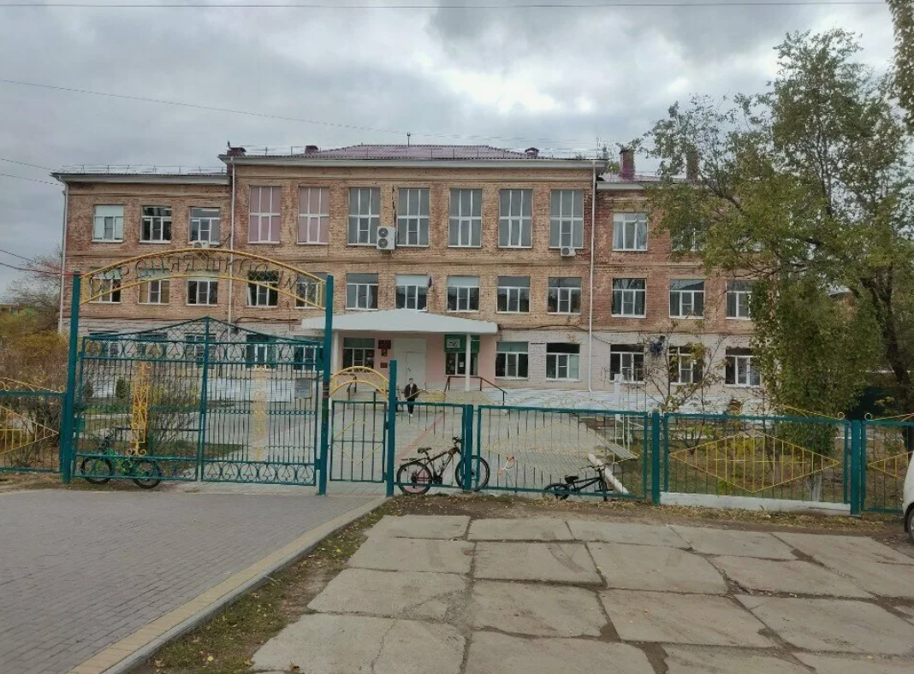

Школа, где каждый
ребёнок раскрывает талант
Имя Тараса Григорьевича Шевченко — символ мудрости, творчества и любви к родному краю. Мы продолжаем традиции и внедряем инновации.

О школе имени Т.Г. Шевченко
📜 История: МБОУ г. Астрахани «СОШ № 4 им. Т.Г. Шевченко» ведёт свою историю с 1932 года. В 1962 году школа обрела новое здание на улице Бориса Алексеева, 12. С 2006 года реализуются программы профильного обучения (естественно-научный, гуманитарный профили). В 2015 году школе присвоено имя великого поэта и художника Тараса Шевченко, что налагает особую ответственность: мы воспитываем гармоничную личность, уважающую культуру и историю.
🏆 Сегодня школа №4 — это современное образовательное пространство с «Точками роста», спортивными секциями, театральной студией, IT-клубом. Наши ученики — призёры городских и областных олимпиад, победители конкурсов чтецов имени Шевченко.
Миссия: Создание среды для самореализации каждого ученика, опора на традиции классического образования и цифровые технологии.
Наши педагоги — сердце школы
Заслуженный работник образования, куратор инновационных проектов.

«Математика — гимнастика ума», призёр конкурса «Учитель года-2023».

Руководитель школьного театра, победитель конкурса чтецов им. Шевченко.

Подготовил призёров региональных олимпиад по праву.
Новости и события
Торжественная линейка с участием выпускников, родителей и почётных гостей. 56 выпускников прощаются со школой.
Ученики 5-11 классов читали стихи, инсценировали отрывки из произведений Кобзаря. Победители получили памятные призы.
Новая лаборатория по химии и биологии оснащена цифровыми микроскопами и VR-оборудованием.
Фотогалерея школы
Активная школьная жизнь: занятия, праздники, победы
Свяжитесь с нами
414000, г. Астрахань, ул. Бориса Алексеева, 12
+7 (8512) 37-90-69
mousosch4@yandex.ru
Официальный сайт: shkola4-ast.ru
Пн-Пт: 8:00 – 17:00, Сб: 9:00 – 13:00
Директор: Негрова Ольга Михайловна
Приём по вторникам с 14:00 до 16:00